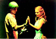

Información: (+57) 350 215 11 00 (WhatsApp)
- Beca de creación, Colcultura, 1997
- Jornadas Juveniles Latinoamericanas, Manizales, 2000
Los diplomas de Andrés Por Semana
Los diplomas de Andrés Caicedo: Una mirada a la recepción
Por Consuelo Posada Giraldo
Los diplomas, residuos dramáticos Por Cristóbal Peláez G.
MATACAICEDO Mi primera vez con Andrés
Por: María Camila López Isaza
LOS DIPLOMAS
de Andrés Caicedo
 |
|
...Una canción escrita en púrpura sobre la muerte.
JOHN KEATS
Esta puesta en escena es entrelazar diferentes textos de Andrés Caicedo (Recibiendo al nuevo alumno, Maternidad y las obras inéditas, La estatua del soldadito de plomo y dos versiones anteriores de Los diplomas), con dramaturgia de Cristóbal Peláez y la visión plástica de los actores donde la obra de teatro Recibiendo al nuevo alumno y el cuento Maternidad constituyen la base, es hacer una fusión de textos de este poeta de la juventud y tratar de darles forma dentro de un marco muy riguroso, con artificio, a través de los pocos pero grandes medios que poseemos: las luces, la música, el actor, el sonido y un espacio vacío, pretendiendo que la poesía surja de ahí, de lo mínimo.
Hemos recurrido a este collage de textos, para tratar de actualizar, no el tema o el contenido sino más bien el subtexto, vale decir: la representación misma. Al hablar de actualizar también hay una intención de traer de la melena al autor a la estética del Matacandelas.
En el intento anterior (Angelitos empantanados) fuimos directamente hasta las fuentes del autor, ahora que lo conocemos un poco más queremos que sus textos vengan hacia nosotros, por ello narramos esta obra desde el punto de vista de la muerte, que para nosotros habitantes de esta ciudad y de este país es un fantasma que nos sigue; mirar la vida desde lo extraño, desde lo desconocido, pero al mismo tiempo tan cercano ¿Más allá de cotidiano hacia la experiencia nueva? Con este Cesare Pavese podríamos decir que la muerte no es una experiencia nueva pues antes de nacer ya estábamos muertos.
El choque entre el despertar emocional, psicológico, intelectual y sexual de los jóvenes colegiales y una educación que no les prepara absolutamente para nada, produce en muchos la muerte del DESEO de la vida pero en otros el DESEO de trascender en algo.
En Los diplomas, una obra en donde el tema bien podría ser el desasosiego, seguimos ensayando algo que empezó años atrás con O marinheiro, la dirección escénica compartida. Es una forma de abrirnos espacio en el difícil camino de la creación, de hacer brotar la imaginación, a través de ideas, en algunos casos totalmente contrarias. Es la confrontación la que nos hace plasmar en el escenario todo lo que nos producen estos hermosos textos del autor caleño.
En general en todos los montajes nuestros hay una participación muy colectiva: todos tenemos derecho y obligación de opinar, puesto que el producto final es la visión de un conjunto, no escuetamente la de un director. Siempre partimos del actor y de las necesidades directas de la escena, de la lógica de la estructura dramática, no nos imponemos al entrar a las sesiones de ensayo un esquema predeterminado. Los directores deben estar siempre atentos a todo lo que insinúe el desarrollo de la acción, y transformar toda la filosofía en imágenes. Más que directores ser, para los actores, un cóncavo espejo.
Es un verdadero placer hablar de nuestra realidad a través de las palabras de este poeta, cuando hemos navegado por las aguas de clásicos modernos, Tennessee Williams, Federico García Lorca, Eugene Ionesco, Beckett, Jean Cocteau, Franz Xaver Kroetz, Pessoa, Tardieu u otros más, es además del gusto que nos une a Caicedo, cabalgar sobre nuestras propias ciudades (Medellín, Cali), cabalgar sobre nuestras propias visiones e ideas.
No sabemos si nuestra misión es llegar a crearnos una dramaturgia nacional, a lo sumo sólo unos estamos preparando el camino para esto, pero Andrés ya está inscrito en sus inicios.
Es para nosotros, hacedores de la cosa teatral, muy satisfactorio que vengan los jóvenes niños adolescentes al teatro a disfrutar de este viaje, que lleguen, como en Angelitos... a nuestro pequeño, agradable y modestísimo teatro para ver, oír y sentir al poeta maldito.
Nadie deliberadamente monta mal teatro, decía el maestro Stanislavski. Nosotros hemos procurado hacer Los diplomas con mucho Deseo, con mucha rabia, y con un inmenso placer de hacer y de decir de la mejor forma posible. Si el público logra captar esto y soslayarse en una gran emoción habremos cumplido, si no, que se nos aplique el letrero de Saloon del Far West: "Se ruega no disparar sobre el pianista, él lo hace lo mejor que puede".
María Isabel García
1997